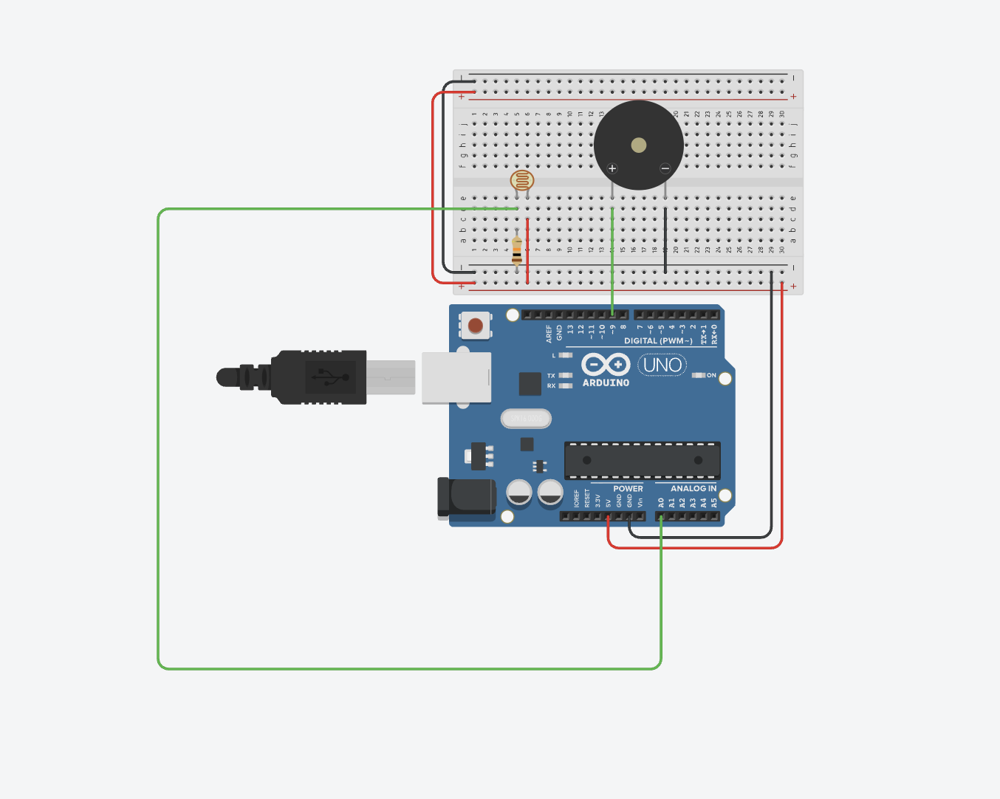

Guía de trabajo + practicario
Práctica: Theremín con LDR y buzzer
Completa la práctica en pantalla, registra tus observaciones y al final genera tu PDF con respuestas y evidencia.
Propósito
Comprender cómo un sistema electrónico transforma una variable física, en este caso la luz, en una señal sonora, integrando conceptos de sensores, programación y aplicaciones reales.
Antecedentes
El theremín es uno de los primeros instrumentos electrónicos de la historia, creado en 1919 por Lev Termen.
Su principal característica es que se toca sin contacto físico, utilizando campos electromagnéticos para generar sonido y controlar variables musicales.
En esta práctica simularemos ese principio con una LDR y un buzzer: la luz sustituye el movimiento de las manos y permite modificar el sonido.
Preguntas sobre antecedentes
¿Para qué sirve esta práctica?
Este sistema representa el modelo Entrada -> Proceso -> Salida:
- Entrada: luz
- Proceso: Arduino
- Salida: sonido
También se relaciona con aplicaciones reales como sensores automáticos, alarmas, dispositivos interactivos e interfaces sin contacto.
Materiales
- Arduino UNO
- Protoboard
- LDR
- Resistencia de 10kΩ
- Buzzer
- Cables
Conexión
- LDR al pin analógico A0
- Buzzer al pin 9
- Alimentación a 5V y GND

Video de referencia
Código base
#define BUZZER 9
#define LDR 0
void setup()
{
Serial.begin(9600);
}
void loop()
{
int valor = analogRead(LDR);
int frecuencia = 400 + (valor / 2);
tone(BUZZER, frecuencia);
}Desarrollo
1. Exploración
- Ejecuta el sistema.
- Modifica la luz sobre la LDR.
2. Observación
Practicario: comprensión
Relación del sistema
Análisis del código
Explica esta línea:
int frecuencia = 400 + (valor / 2);Análisis del sistema
Aplicación
Transferencia
Experimentación
Prueba esta variación y registra tus observaciones:
int frecuencia = 200 + (valor / 4);Desarrollo final
Modifica el programa para lograr lo siguiente:
- Oscuridad: sin sonido
- Poca luz: sonido grave
- Mucha luz: sonido agudo
Pregunta final
Evidencia
- Foto del circuito
- Código modificado
- Respuestas del practicario
- Video del funcionamiento
Firma de revisión
Profesor: ____________________________________